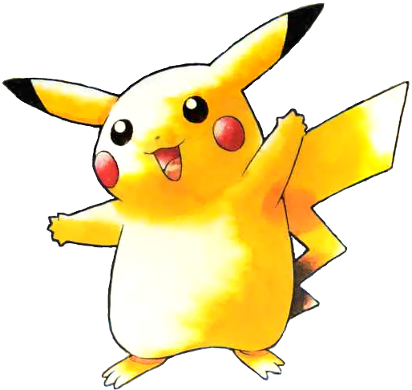
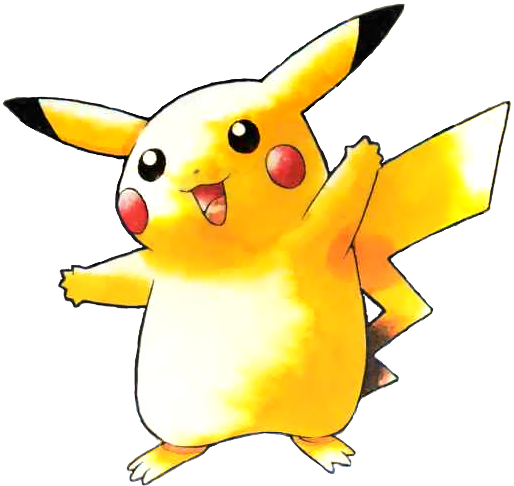
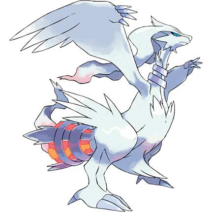
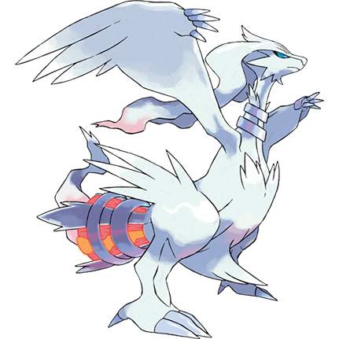

Pokémon Game Ratings
Pokémon Yellow
 

Pokémon Yellow is a classic game that I played for 26.22 hours. Unfortunately, it falls short of my expectations and remains my least favorite game so far. Despite its charming graphics and iconic Pokémon characters, the game feels overly simplistic and lacks the depth and complexity I seek in a game. The mechanics are basic, and the game progression is straightforward, leaving little room for surprises or exploration. Additionally, the story plot is shallow and fails to engage the player in a meaningful way. Overall, while Pokémon Yellow may have been groundbreaking in its time, it fails to hold up to modern gaming standards.
Pokémon Platinum
Pokémon Platinum is a captivating game that I played for 136.48 hours. It's my favorite and most played game, as it was the first Pokémon game I played at the age of 5. The Pokémon design and side quests were impressive, including the post-game. Although Team Galactic, the antagonist team, was underwhelming in the original Diamond and Pearl, Platinum improved their presence vastly. Overall, Pokémon Platinum is an enjoyable game with lots of content and replayability.
Pokémon HeartGold
Having spent 111.25 hours playing Pokémon HeartGold, I can say that it was a consistently enjoyable experience. The game's stunning attention to detail in creating beautiful scenery, combined with special features such as the PokeWalker, made it stand out. While the game's antagonist team and plot were forgettable, the opportunity to battle the formidable Pokémon trainer Red at the end was a thrilling highlight that made the journey worthwhile. Overall, Pokémon HeartGold is a fantastic addition to the series that any fan should try.
Pokémon Black
 

Pokémon Black, one of my favorite games, provided me with 61.10 hours of enjoyable gameplay. The stunning game designs of every city, character, and Pokémon were impressive, and the side minigames were a great addition. What stood out the most was the game's complex and thoughtful plot, which revolved around the intriguing antagonist named N. However, the game's straightforward progression left little room for exploration. Despite this flaw, Pokémon Black is a must-play for anyone who enjoys a well-crafted story and beautiful game design.
Pokémon X
After playing Pokémon X for 43.22 hours, I found it to be a visually impressive game, especially considering that it was Game Freak's first attempt to create a 3D world for Pokémon. The creativity in designing the Pokémon was also notable. However, the unique game features didn't provide enough incentive to spend more time playing, which was a bit disappointing. Overall, while Pokémon X had its strengths, it wasn't a game that kept me engaged for a significant amount of time.
Pokémon Omega Ruby
Pokémon Omega Ruby is a nearly-identical remake of one of the most beloved classic Gameboy games. However, after playing it for 104.17 hours, I found it to be a somewhat disappointing modern game experience. The addition of an automated experience-sharing feature made the game too easy, and the lack of depth in the antagonist team made them more of a nuisance than a challenge. The slow pace of the game only picked up interesting features toward the last quarter, which made it difficult to maintain interest. While the game had potential, it ultimately fell short of my expectations.
Pokémon Moon
After playing Pokémon Moon for 50.75 hours, I found that while it wasn't my favorite game in the franchise, it was still a solid attempt at refreshing the series. The game's most unappealing aspect was the design of the Pokémon themselves, which I found lacked the charm of previous games. However, I appreciated the risks the game took in going against traditional Pokémon games of the past, such as getting rid of Pokémon gyms and replacing them with trials that challenged players in different ways. While these changes were nice to see, they didn't always hit the mark for me. Overall, I think the game deserves recognition for attempting something new, and it was a commendable effort.